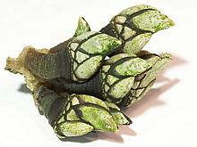
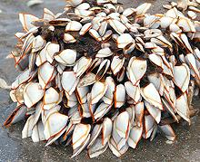
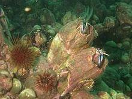
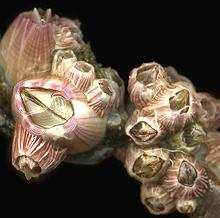

SAFARI
Users
General & History
Barnacles first appear in the Middle Cambrian about 500 million years ago but had not yet developed the hard calcareous outer shell we see today. They are Crustaceans, thus related to shrimp (but not too closely) with which they share the basic crustacean anatomy.
Larval barnacles float around until they find a suitable substrate. Then they latch on to it with their first antennae and glue their head down to it. From then on they're pretty much stuck there. A thin layer of flesh (mantle) forms from the head and wraps around the entire body and secretes an outer shell. With Goose Barnacles, the head extends to form a tough flexible stalk (the edible part).
The barnacle then feeds by using its feathery feet to capture small edible bits and critters that float by. Unlike mollusks barnacles don't pump water but depend on water circulation in exposed areas.
In Medieval times, since no-one had ever seen a goose nest or egg (they nest in the Arctic), it was thought the goose barnacle was the larval stage of the barnacle goose (Branta leucopsis). The barnacle goose was thus classified as a fish and allowed by the church to be eaten on Meatless Fridays.
Varieties
Goose Barnacle - Intertidal

[Gooseneck Barnacle, Percebes (Spain, Portugal); Pollicipes polymerus and similar species]
This is the Goose Barnacle of commerce and the plate. They attach to rocks in the intertidal zone with their feathery feet facing away from the waves. They catch food going by in the outflow.
Because they prefer rugged rocky environments with big waves they are
dangerous to gather. They are gathered along the Iberian Peninsula (most
are eaten in Spain and Portugal) and along the Pacific Northwest of the
U.S. and Canada. Gathering them is tightly controlled in the Pacific
Northwest and licenses are required for posession.
Details and Cooking.
Photo © i0122.
Goose Barnacle - Pelagic

[Lepas anatifera and similar species]
These Goose Barnacles attach to floating stuff on the high seas and depend
on wave action to bring food to them. They're seen only when something
they're attached to washes up on the shore. In an environment much less
harsh than for intertidal species their stems are thinner. For these
reasons they aren't much eaten.
Details and Cooking.
Photo © i0123.
Giant Barnacle
 [Picoroco (Spanish): Austromegabalanus psittacus of family Balanidae]
These Barnacles are found off the coasts of Peru, Chili, and the southern 2/3
of Argentina. Their outer shell can be up to 12 inches (30cm) tall. They are
considered a prestigious (and expensive) seafood in Chile, and have been
overharvested. Aquaculture is now being explored.
Details and Cooking.
Photo by Dentren at en.wikipedia distributed under license
Creative Commons
Attribution-ShareAlike v3.0 Unported attribution required.
Acorn Barnacle
 [Balanus amphitrite and similar species]
The Acorn Barnacle is the most common and troublesome family of barnacles. It cements its head directly to the substrate without any stem at all.
This is not an edible family. Most acorn barnacles are around 1/2 inch
across or smaller but even the giant barnacles of Antarctica (which may be
over 3 inches across) have nothing to eat inside.
Details and Cooking.
Photo © i0124.
Health & Nutrition
Barnacles are not a significant food resource so little nutritional data has been published. Presumably they would be similar to shrimp. The main health risk for edible barnacles is in harvesting them.